Family
Autumn in London
29 October 2014

The theme for this month’s blog circle is “autumn” and perfectly enough, this past weekend I ventured out with my family to do some of my favorite autumn activities–pumpkin picking, pumpkin carving, costume making, apple bobbing and several other very important getting-ready-for-halloween festivities.
We drove out to a little farm about 30 minutes outside of London that had impressive array of Halloween activities (keep in mind Halloween is relatively new over here!). Oliver was in heaven to say the least–he spent his time between a “creepy tee-pee” and playing “halloween party” on a playhouse with some other children.
There was also an owl zoo, a spooky hay ride and an enchanted forest walk. One thing I have to say that I’ve noticed is a little different when it comes to halloween around here is that they really go for it in the scary department even for children’s costumes— blood guts and all! It always seemed that in the states people most people stick with more PG rated costumes that are cute, furry or funny until kids get a little older.
Am I wrong? It was a definitely jarring to see children as young 2 year old with “blood” running down their mouths and zombie eyes!! I think I will stick with chickens, lambs, owls, pilots, etc. for a few more years! Speaking of which, here are also images of my own in their halloween costumes and some images from a halloween party I threw for my son’s nursery school at our house.
The cake is one of two monster cakes I made (this green one ended up all over me unfortunately–long story). We had a lot of fun playing pass the pumpkin, making pumpkin masks and halloween bracelets, and going on a “ghost hunt” (those ghosts are little lollipops we hid in our garden). Anyway, here is enough spookiness until next year…
To see Heather Kelly’s take on this mont’hs theme click here
To book your children’s portrait photography session with me, please email me at amy@fantonphotography.com or call me at 07462907790.
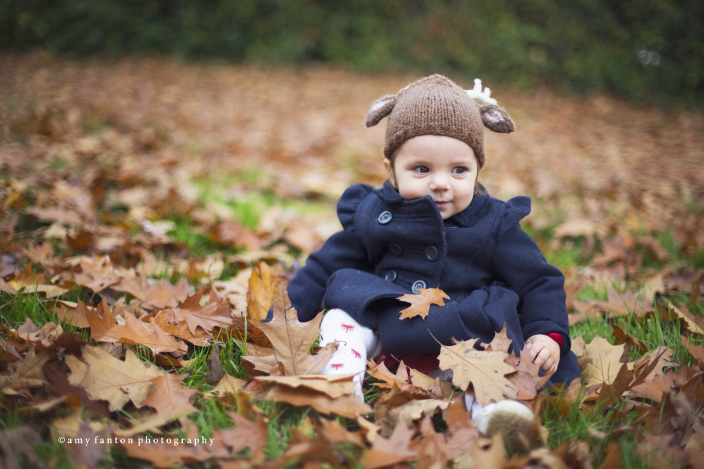
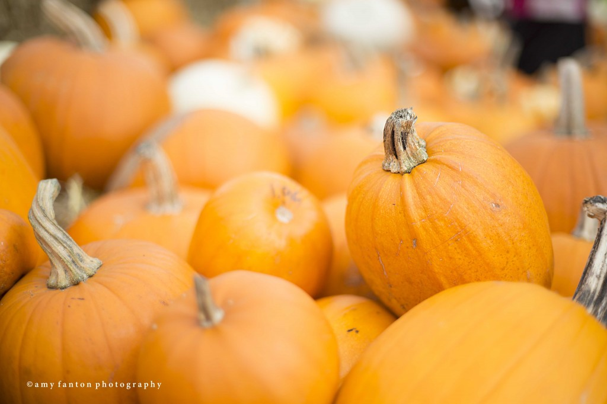
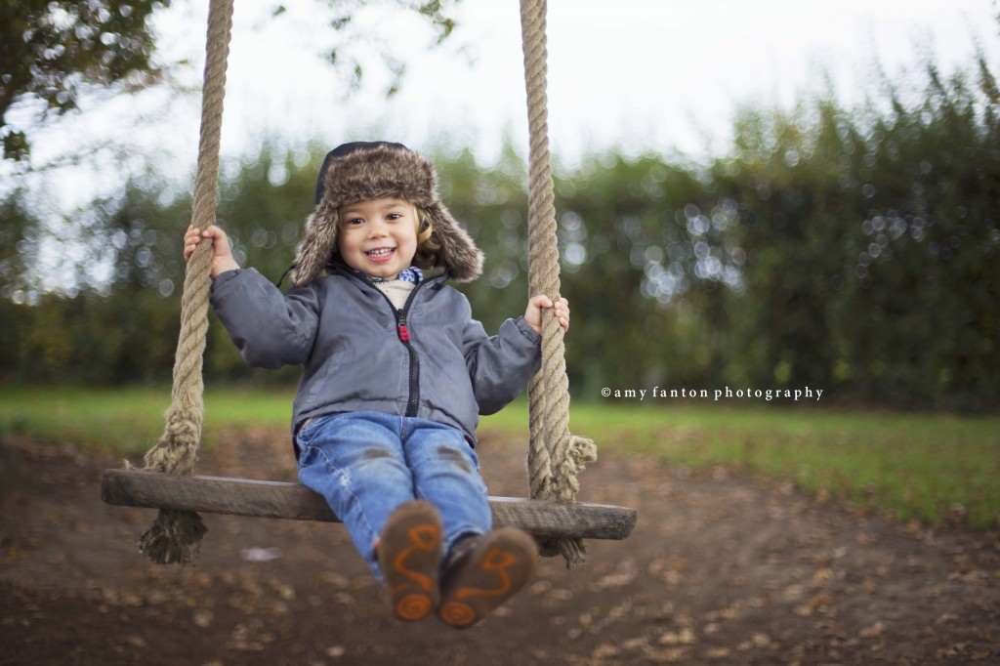
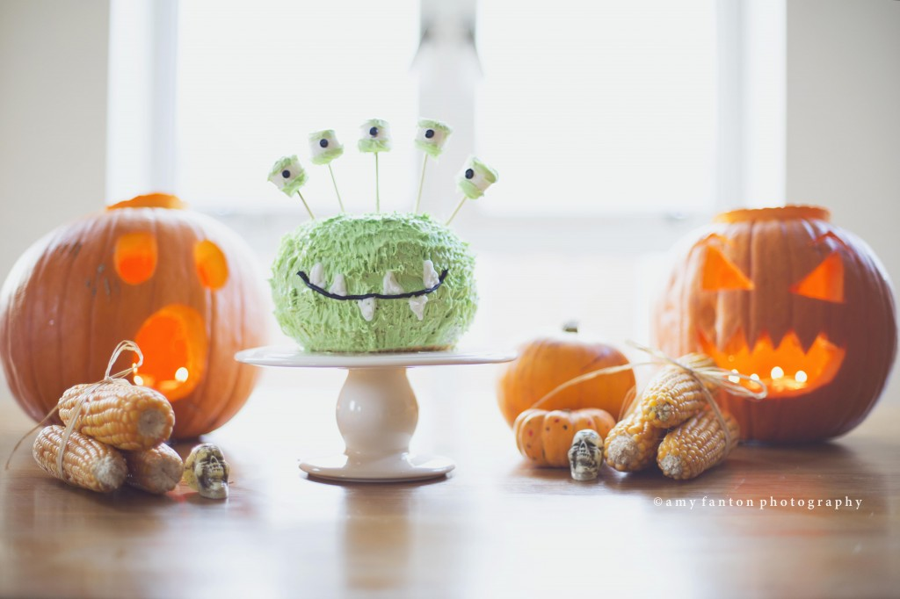
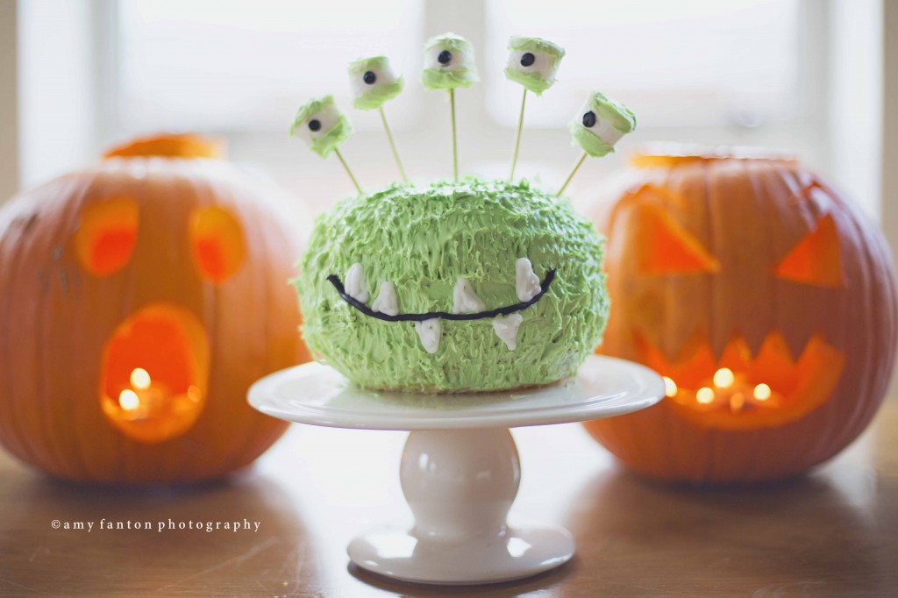
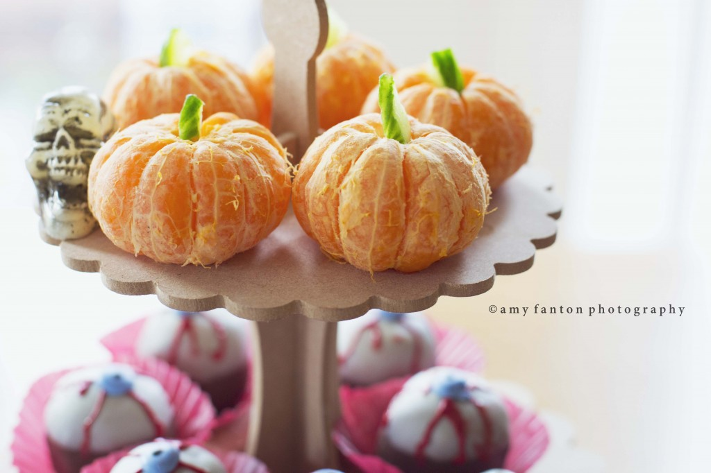
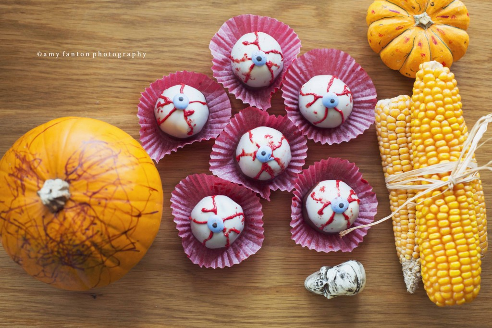
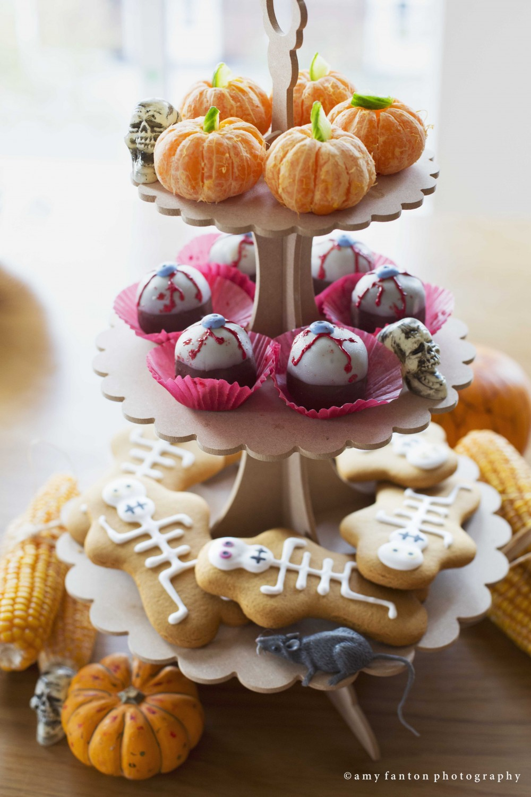
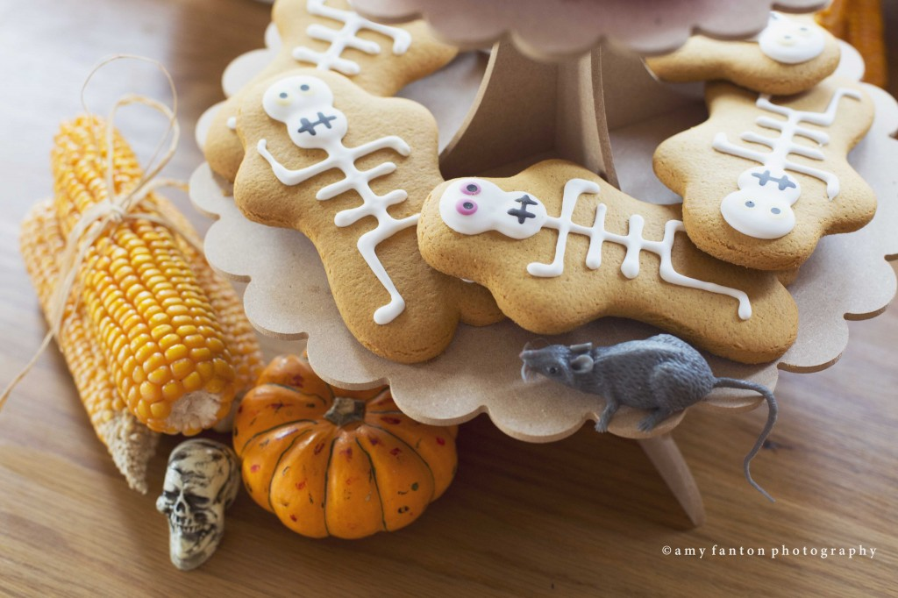
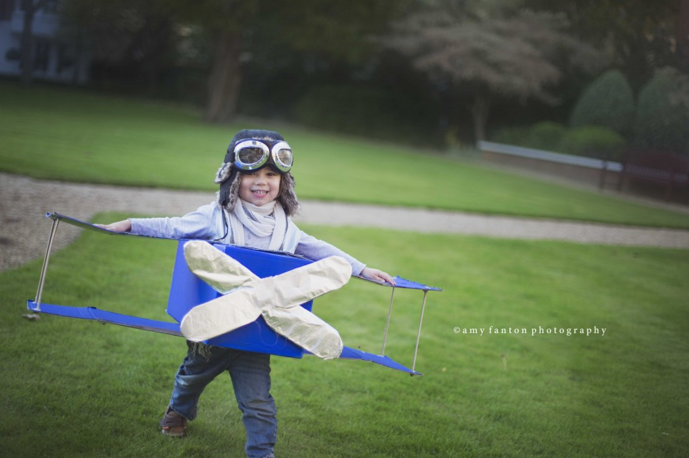
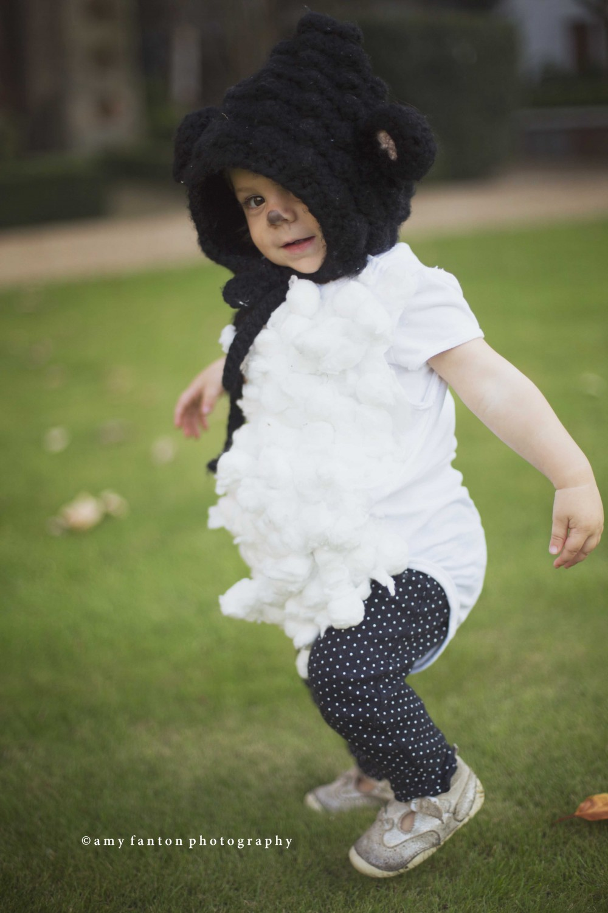
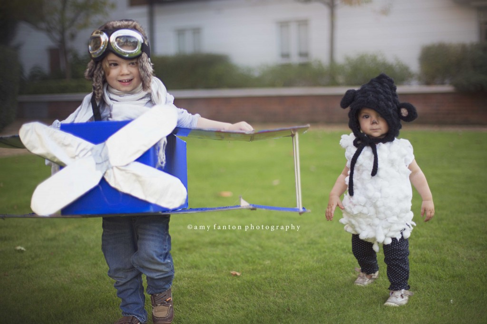
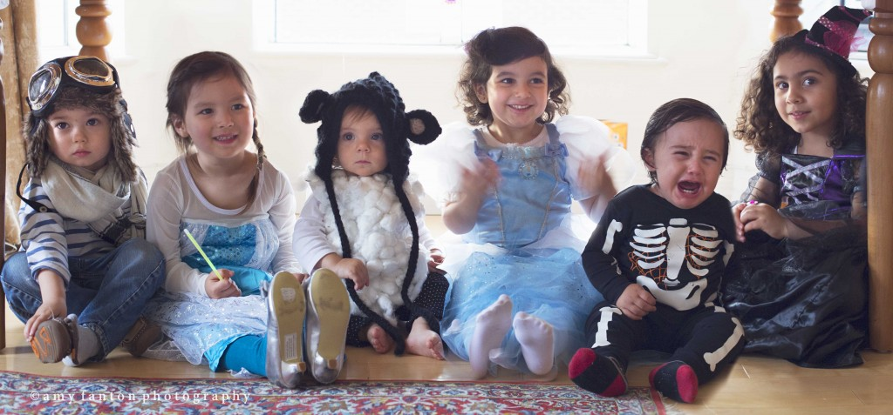